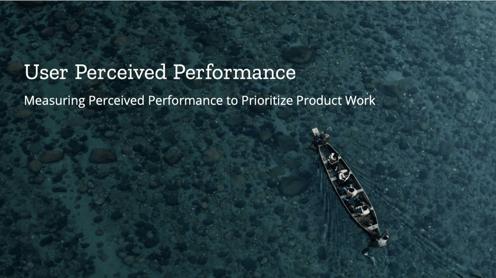

User Perceived Performance: Measuring Perceived Performance to Prioritize Product Work
This post is adapted from a talk delivered by Heather McGaw and Gemma Petrie at the PerfMatters Conference in 2019.

The Challenge of Perceived Performance
When discussing software performance, engineers typically focus on objective measurements: page load times, resource usage, and response latency. But there's another critical dimension to performance that's often overlooked: how fast does the software feel to the user?
At Mozilla, we've discovered that perceived performance—how quickly software appears to perform a given task—is just as important as actual performance metrics for delivering a great user experience. This insight led us to develop a structured approach to measuring and improving perceived performance for Firefox across our desktop and mobile browsers.
The Mozilla Engineering Legacy
Mozilla has a rich engineering history dating back to 1998 when the Netscape browser suite source code was released. The organization was founded to "harness the creative power of thousands of programmers on the Internet and fuel unprecedented levels of innovation in the browser market."
While Firefox remains engineering-focused, we've grown our UX and Product organizations significantly in recent years. This evolution set the stage for our work on Firefox Quantum in 2017—a major desktop browser update that included numerous improvements to the Gecko browser engine and a substantial visual refresh, all aimed at making Firefox feel noticeably faster.
Defining Perceived Performance
Before we could meaningfully measure perceived performance, we needed to clearly define what it means. Drawing from academic research and our Firefox Photon Design System, we identified four key factors that determine perceived performance:
Duration: The actual time a process takes. This is what engineers traditionally measure as "performance."
Responsiveness: The perceived time it takes the system to respond to user input. For example, an empty dialog appearing immediately after a click and then taking a second to populate feels faster than a dialog appearing with a one-second delay fully populated.
Fluency: The perceived smoothness of a process—how hard the machine appears to be working. A stuttering progress indicator gives the impression of lower performance regardless of the actual task duration.
Tolerance: How long users expect a process to take and at what point they will abandon it. For instance, users have a much higher tolerance for loading a web page than for saving a bookmark.
We also discovered that users perceive time differently depending on whether they're actively engaged (active time) or passively waiting (passive time). Time passes more quickly when users are mentally engaged in a task versus when they're simply waiting.
Our Research Approach
With this understanding, we developed a structured approach to measure perceived performance across our products. Here's how we did it:
1. Identify stakeholders and set clear goals
We started by gathering cross-functional teams including product managers, engineering managers, and project managers. Together, we defined specific goals:
Identify the greatest areas for improvement in perceived performance
Evaluate progress over time
Develop a consistent measurement framework
2. Benchmark against competitors
We conducted initial benchmarking studies comparing Firefox with Chrome, using:
Unbranded browser builds to eliminate brand bias
A mix of browser-specific tasks (opening new tabs, windows) and site-specific tasks (menu interactions, loading content, scrolling)
Controlled environments with consistent devices and tasks
Randomized task orders to eliminate sequence bias
For our mobile studies, we tested on both high-performance/high-bandwidth and low-performance/low-bandwidth devices to understand performance perceptions across different user environments.
3. Collect qualitative and quantitative data
Our research sessions included:
Individual interviews with 40+ participants
7-point rating scales for speed perception on various tasks
Overall preference selections
Qualitative feedback on specific experiences
4. Analyze results and prioritize improvements
After identifying performance perception gaps, we worked with design and engineering teams to prioritize improvements. For example, on desktop we learned:
Firefox's "Close Tabs" dialog was perceived as a useful security feature worth preserving
Scrolling on Facebook felt "glitchy" and needed improvement
Loading graphics and JavaScript interactions were perceived as slow on certain sites
For mobile, we discovered that performance differences were much more noticeable on low-bandwidth connections, helping us focus optimization efforts where they would have the most significant impact.
Impact and Results
Our perceived performance research directly influenced product decisions across Firefox:
Feature preservation: We kept features like the "Close Tabs" dialog which users valued for offering a sense of security, even though it technically added a step to browser operation.
Engineering focus: We targeted specific pain points like scrolling performance on Android, with multiple bugs filed and fixed based on our research.
Design decisions: Interface elements were modified to better suggest speed and responsiveness.
Product evolution: Successive Firefox releases showed measurable improvements in perceived performance, with Firefox 57 (Quantum) closing the performance perception gap with Chrome.
Perhaps most importantly, the research led to a cultural shift in how Mozilla approaches performance. Today, "user perceived performance" is a standard term in our product development process, and we've dedicated resources including a Product Manager specifically focused on perceived performance.
Key Lessons for Your Organization
If you're looking to implement similar research in your organization, here are the key takeaways:
Perceived performance matters as much as actual performance for user satisfaction and retention.
Cross-functional collaboration is essential—involve engineering, product, and UX teams from the beginning.
Control for important factors such as devices, bandwidth, task order, and branding to get reliable results.
Establish benchmarks against competitors and against your own previous versions.
Run studies regularly to track improvements and identify new opportunities.
Share the results broadly to build organizational awareness of the importance of perceived performance.
By bringing user perceptions into your performance optimization process, you can ensure that engineering improvements translate directly into enhanced user experiences, driving satisfaction and loyalty for your products.